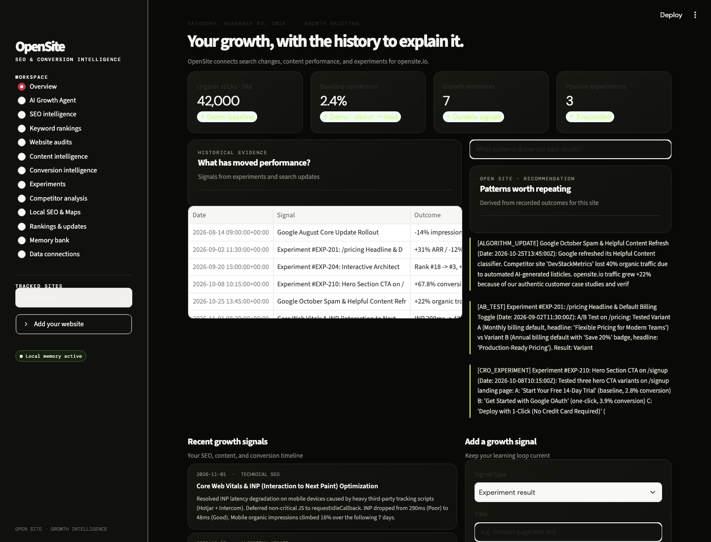

↗
SEO intelligence
Connect Search Console, tracked keyword history, technical audits, and PageSpeed signals.
OpenSite connects your search visibility, content performance, and conversion experiments in one lasting learning loop. See what changed, what followed, and what your team should learn next.

Bring your existing open tools together. OpenSite helps teams keep the context that gets lost between dashboards, experiments, and quarterly reviews.
Connect Search Console, tracked keyword history, technical audits, and PageSpeed signals.
Inspect page structure and connect content changes with measured search and analytics outcomes.
Keep hypotheses, test results, and decisions together so wins can inform the next test.
Read-only connections for Google Analytics, Plausible, PostHog, Umami, and Matomo.
Recall past signals by property with local or Firestore storage and optional Hindsight mirroring.
Ask questions about your history. OpenSite keeps observed results distinct from hypotheses.
Connect a property, bring in live data, and record the changes your team makes. OpenSite builds a searchable timeline that gives future recommendations context.
Get started in the README ↗“The best growth dashboard remembers what happened before.”
OpenSite is an open-source foundation for SEO and conversion intelligence. Connect your own providers and grow the workflow around your team.